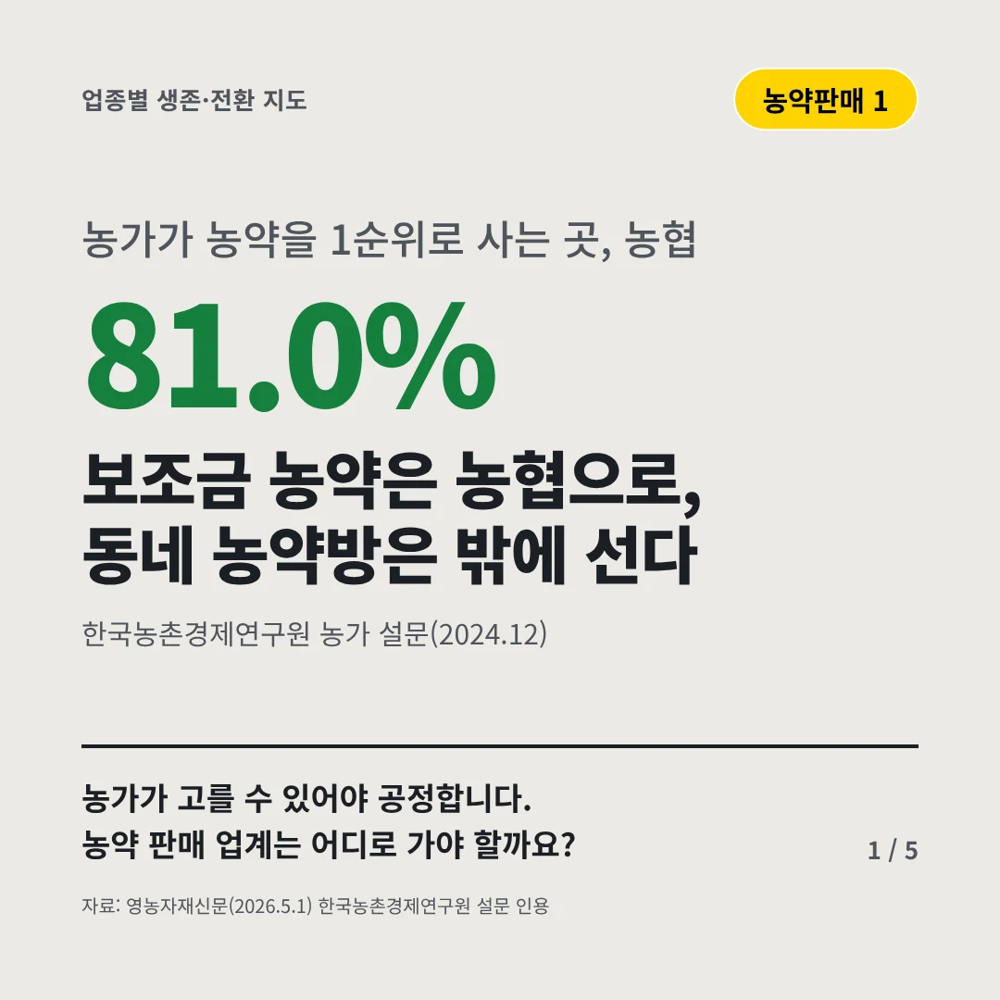
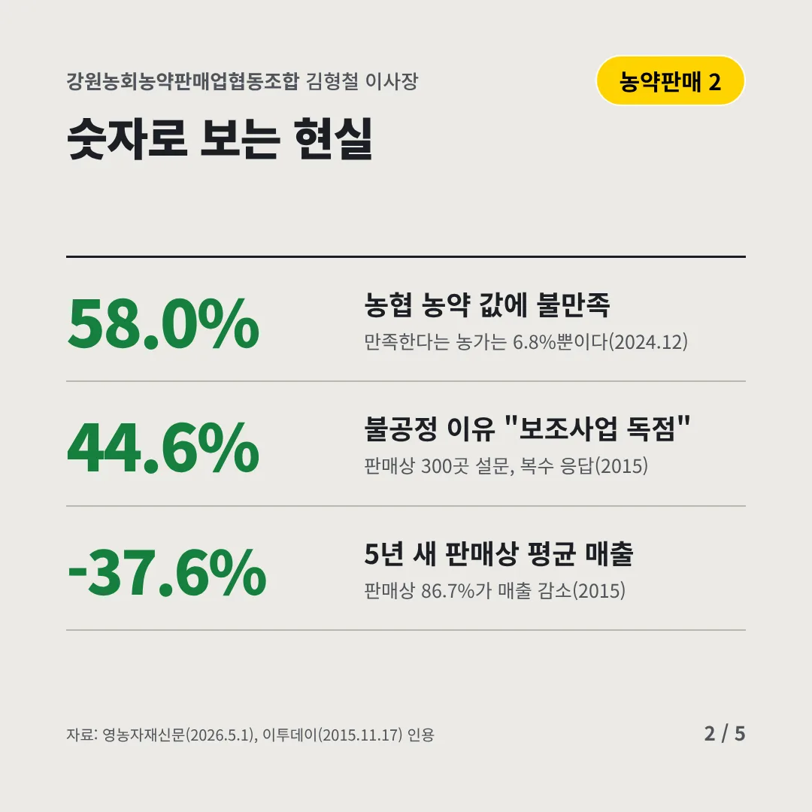
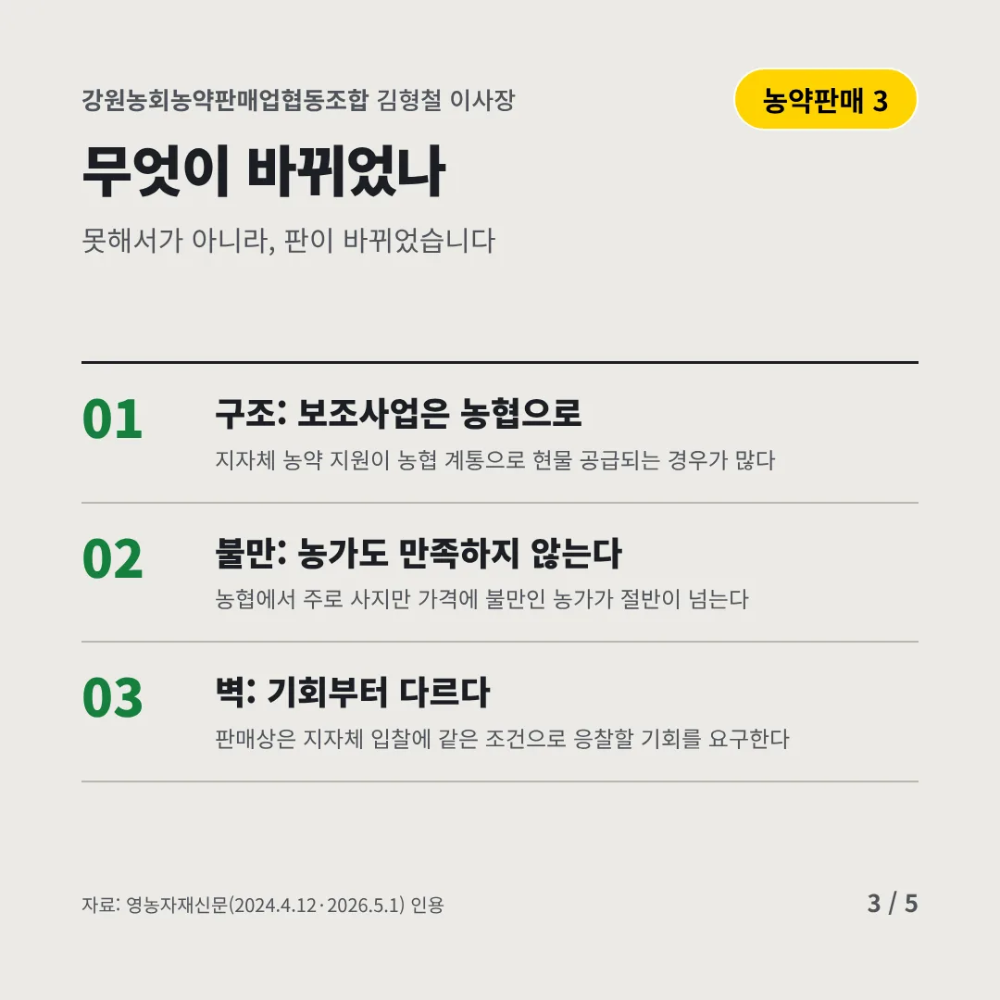
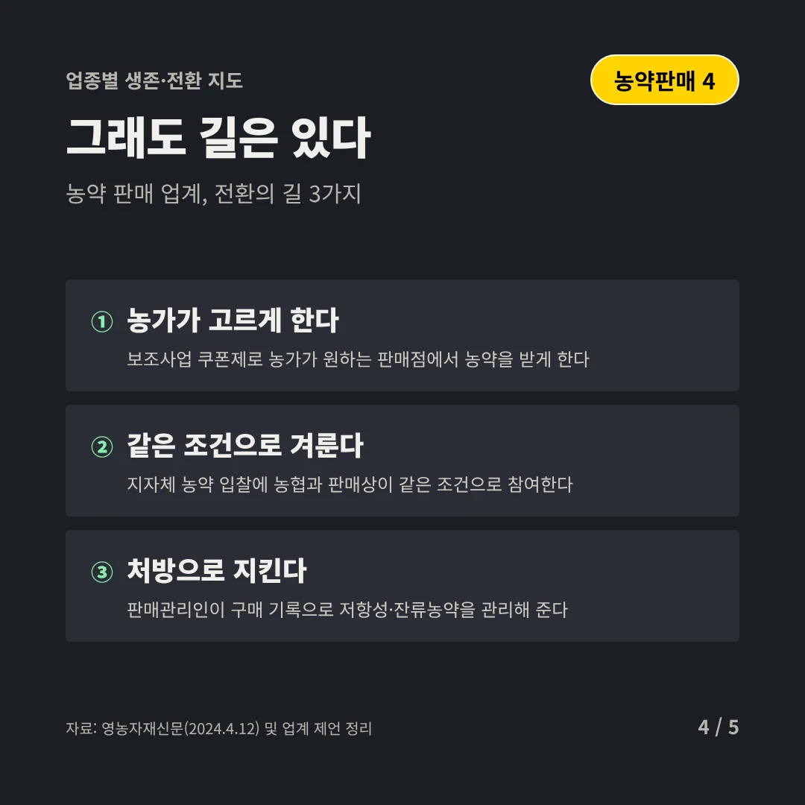
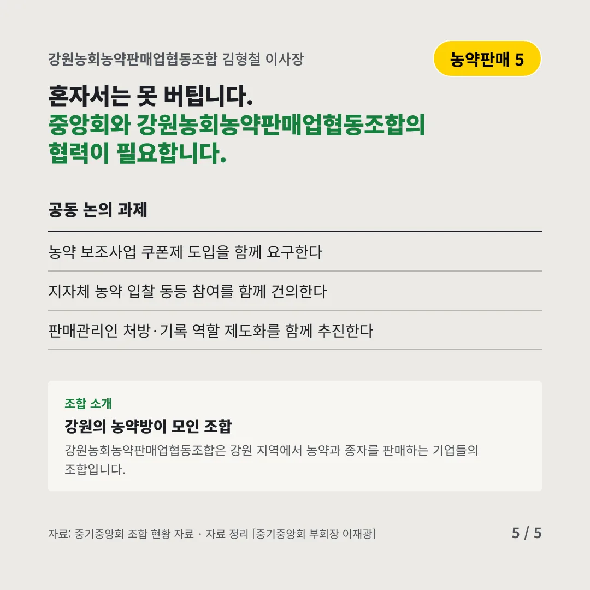
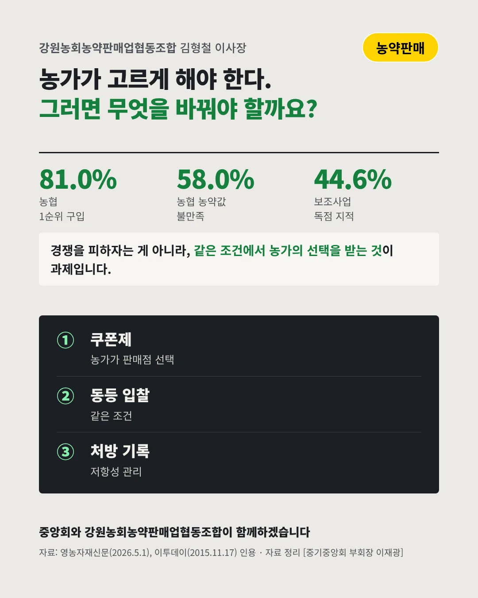

강원농회농약판매업협동조합
보조금 농약은 농협으로, 동네 농약방은 밖에 선다
81.0% 농가가 농약을 1순위로 사는 곳, 농협






농가가 고를 수 있어야 공정합니다. 농약 판매 업계는 어디로 가야 할까요?
숫자로 보는 현실
- 58.0%농협 농약 값에 불만족만족한다는 농가는 6.8%뿐이다(2024.12)
- 44.6%불공정 이유 "보조사업 독점"판매상 300곳 설문, 복수 응답(2015)
- -37.6%5년 새 판매상 평균 매출판매상 86.7%가 매출 감소(2015)
무엇이 바뀌었나
- 구조: 보조사업은 농협으로지자체 농약 지원이 농협 계통으로 현물 공급되는 경우가 많다
- 불만: 농가도 만족하지 않는다농협에서 주로 사지만 가격에 불만인 농가가 절반이 넘는다
- 벽: 기회부터 다르다판매상은 지자체 입찰에 같은 조건으로 응찰할 기회를 요구한다
그래도 길은 있다
- 농가가 고르게 한다보조사업 쿠폰제로 농가가 원하는 판매점에서 농약을 받게 한다
- 같은 조건으로 겨룬다지자체 농약 입찰에 농협과 판매상이 같은 조건으로 참여한다
- 처방으로 지킨다판매관리인이 구매 기록으로 저항성·잔류농약을 관리해 준다
한 장 요약

조합 소개
강원농회농약판매업협동조합은 강원 지역에서 농약과 종자를 판매하는 기업들의 조합입니다.
자료: 영농자재신문(2026.5.1), 이투데이(2015.11.17), 영농자재신문(2024.4.12·2026.5.1), 영농자재신문(2024.4.12)